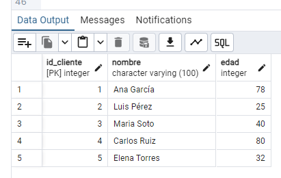
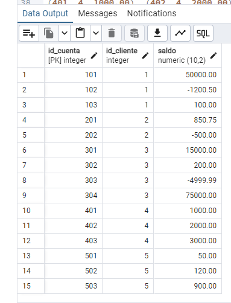
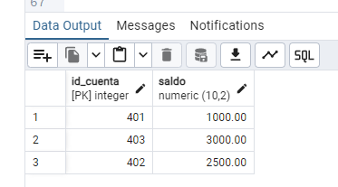
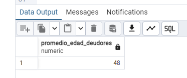
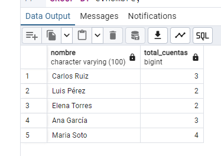
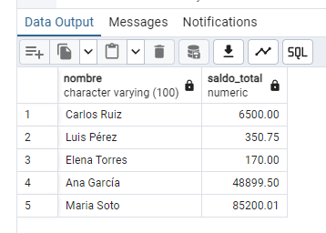
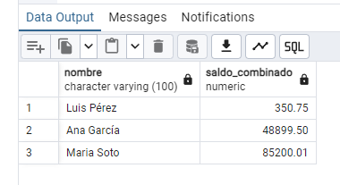

Implementación de un modelo relacional Clientes-Cuentas con llaves foráneas,
restricciones de control (CHECK) y lógica de integridad referencial ON DELETE CASCADE.
CREATE TABLE Clientes (
id_cliente INT PRIMARY KEY,
nombre VARCHAR(100) NOT NULL,
edad INT CHECK (edad BETWEEN 18 AND 85) NOT NULL
);
CREATE TABLE Cuentas (
id_cuenta INT PRIMARY KEY,
id_cliente INT NOT NULL,
saldo NUMERIC (10, 2) CHECK (saldo BETWEEN -5000.00 AND 100000.00),
CONSTRAINT fk_cliente
FOREIGN KEY (id_cliente)
REFERENCES Clientes (id_cliente)
ON DELETE CASCADE
ON UPDATE CASCADE
);Se asegura la integridad mediante Llaves Primarias y una Llave Foránea con efecto cascada.
-- 2. INSERCIÓN DE DATOS
INSERT INTO Clientes (id_cliente, nombre, edad) VALUES
(1, 'Ana García', 78),
(2, 'Luis Pérez', 25),
(3, 'Maria Soto', 40),
(4, 'Carlos Ruiz', 80),
(5, 'Elena Torres', 32);
INSERT INTO Cuentas (id_cuenta, id_cliente, saldo) VALUES
(101, 1, 50000.00), (102, 1, -1200.50), (103, 1, 100.00),
(201, 2, 850.75), (202, 2, -500.00),
(301, 3, 15000.00), (302, 3, 200.00), (303, 3, -4999.99), (304, 3, 75000.00),
(401, 4, 1000.00), (402, 4, 2000.00), (403, 4, 3000.00),
(501, 5, 50.00), (502, 5, 120.00), (503, 5, 900.00);Inserción de datos en tablas respetando las restricciones de CHECK: Edades (18-85) y Saldos (-5,000 a 100,000).
Tabla: Clientes

Tabla: Cuentas

SELECT cta.id_cuenta, cta.saldo
FROM Cuentas cta
JOIN Clientes cli ON cta.id_cliente = cli.id_cliente
WHERE cli.edad = (SELECT MAX(edad) FROM Clientes);Identificación del patrimonio del cliente con mayor edad (Carlos Ruiz, 80 años).

SELECT ROUND(AVG(cli.edad)) AS promedio_edad_deudores
FROM Clientes cli
JOIN Cuentas cta ON cli.id_cliente = cta.id_cliente
WHERE cta.saldo < 0;Cálculo del perfil demográfico de clientes con obligaciones pendientes.

SELECT c.nombre, COUNT(cu.id_cuenta) AS total_cuentas
FROM Clientes c JOIN Cuentas cu ON c.id_cliente = cu.id_cliente
GROUP BY c.nombre HAVING COUNT(cu.id_cuenta) > 1;Uso de GROUP BY y HAVING para identificar clientes multicuenta.

SELECT c.nombre, SUM(cu.saldo) AS saldo_total
FROM Clientes c JOIN Cuentas cu ON c.id_cliente = cu.id_cliente
GROUP BY c.nombre HAVING COUNT(cu.id_cuenta) > 1;Consolidación de activos por usuario con múltiples productos financieros.

SELECT c.nombre, SUM(cu.saldo) AS saldo_combined
FROM Clientes c JOIN Cuentas cu ON c.id_cliente = cu.id_cliente
WHERE c.id_cliente IN (SELECT id_cliente FROM Cuentas WHERE saldo < 0)
GROUP BY c.nombre;Filtrado mediante subconsultas para identificar el saldo neto de deudores.

Este ejercicio demuestra el control total sobre las relaciones entre entidades y la capacidad de extraer métricas financieras precisas.